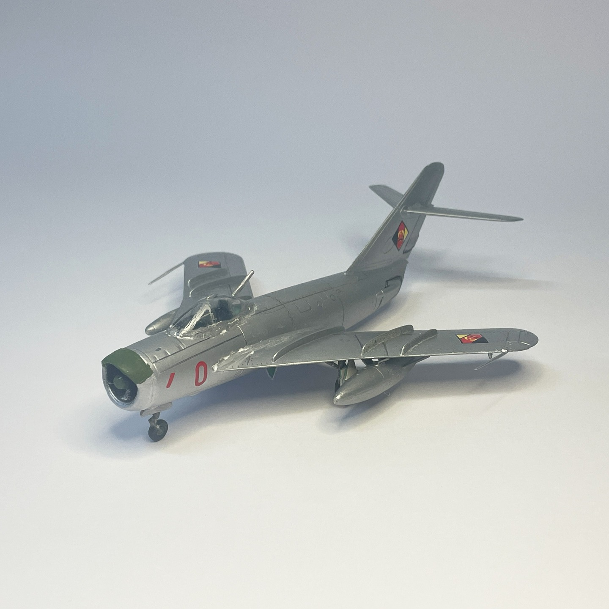
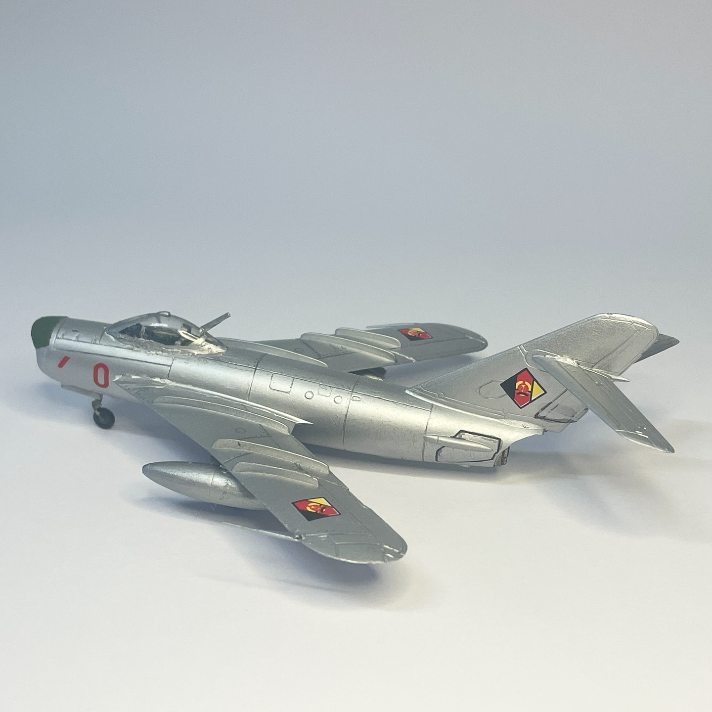

Aerei · scale model archive
Mig 17
Mig 17 — Kit: KP, Scale: 1/72. Aircraft flown by Luftstreitkräfte der Nationalen Volksarmee - East Germany Brasov AFB 1962 #mig17

Photo gallery

English description
Aircraft flown by Luftstreitkräfte der Nationalen Volksarmee - East Germany Brasov AFB 1962
#mig17
Descrizione italiana
Aereo pilotato dalla Luftstreitkräfte der Nationalen Volksarmee, Germania Est, base aerea di Brasov, 1962. #mig17